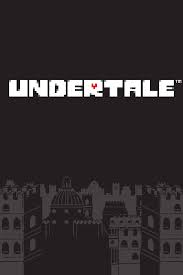

Overview
Undertale is an indie RPG created by Toby Fox, released in 2015.
The game follows a human who falls into the Underground, a hidden world
inhabited by monsters who were sealed away from the surface long ago.
Unlike traditional RPGs, Undertale allows players to choose how they
interact with the world around them. Battles are not limited to defeating
enemies, as players can use the ACT menu to understand monsters, solve
conflicts, and discover peaceful solutions.
The combat system combines classic turn-based RPG mechanics with bullet-hell
gameplay, where the player must control a small SOUL and avoid enemy attacks.
Every encounter is designed to reveal something about the characters and
the world they live in.
Throughout the journey, the player's choices influence the events that occur,
changing the relationships with characters, the dialogue, and the final outcome
of the adventure. Every action can have consequences, making each playthrough
feel different.
Undertale is known for its memorable characters, unique humor, emotional
storytelling, and the way it challenges traditional ideas about RPGs. The game
encourages players to think about their decisions and the impact they have on
the world.
This website is a guide designed to explore the world of Undertale, including
its characters, gameplay mechanics, routes, and story. More sections will be
added as development continues.

Characters
The Underground is home to many unique monsters, each with their own
personalities, goals, and stories. Every character has their own history
and perspective on the world they live in.
Throughout the journey, the player meets characters who can become friends,
enemies, or something in between depending on their choices. The way the
player interacts with them can completely change their relationships and
the events that follow.
From the cheerful and determined Papyrus, to the mysterious and laid-back
Sans, every character plays an important role in shaping the world of
Undertale. Some characters guide the player, while others challenge their
beliefs and decisions.
The game focuses heavily on the connections made between humans and
monsters. Conversations, actions, and even small decisions can reveal
different sides of each character, making the Underground feel like a
living world rather than just a place to explore.
Many characters also have their own personal struggles, dreams, and fears.
Understanding their stories is an important part of discovering the truth
behind the Underground and the events that led to its creation.
This section will explore the main characters of Undertale, including their
personalities, roles in the story, and how they are affected by the player's
choices.
Gameplay
Undertale combines traditional RPG elements with unique mechanics that
change how players approach battles.
During encounters, players can choose to fight enemies or interact with
them using the ACT menu. Understanding each monster's personality can
allow battles to be completed without violence.
The game features a bullet-hell style combat system, where players must
control a small heart and avoid enemy attacks.
The player's decisions shape the journey through different routes:
Neutral Route
The Neutral Route is the result of making mixed choices throughout the
game. It can happen when the player fights some enemies but spares others,
leading to many possible endings.
Pacifist Route
The Pacifist Route focuses on showing mercy to every monster and forming
connections with the characters. It reveals more of the story and
explores the relationships between humans and monsters.
Genocide Route
The Genocide Route happens when the player chooses a much darker path,
defeating every enemy in each area. This route changes the world,
characters, and overall tone of the game.
Story
The story of Undertale begins when a human falls into the Underground, a
hidden world beneath the surface where monsters have been trapped for many
years.
Long ago, humans and monsters lived together peacefully. However, after a
conflict between the two races, humans emerged victorious and sealed the
monsters away using a powerful barrier, separating them from the outside
world.
As the player explores the Underground, they discover a world filled with
forgotten history, unusual locations, and monsters who each have their own
reasons for wanting to escape.
The journey is shaped by the player's decisions. Whether they choose to
show mercy, fight, or take a different path entirely, the story changes
based on their actions and the relationships they create.
Behind the humor and charming characters, Undertale explores deeper themes
such as friendship, loneliness, determination, consequences, and the impact
of the choices people make.
Every route reveals different parts of the Underground's history and the
truth behind the events that brought humans and monsters to their current
situation.
This section will explore the timeline, important events, mysteries, and
the different paths that can be discovered throughout Undertale.